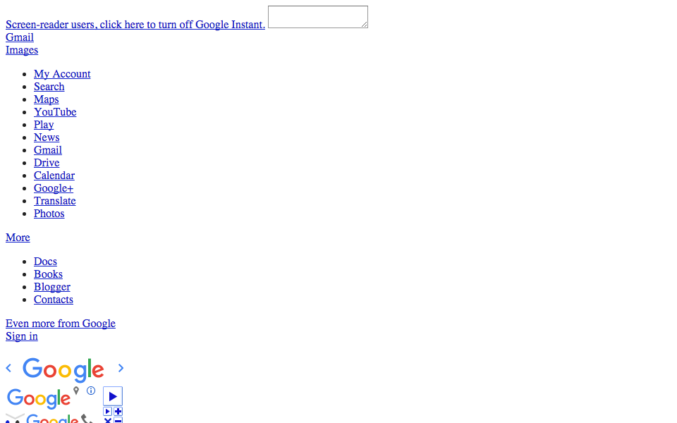
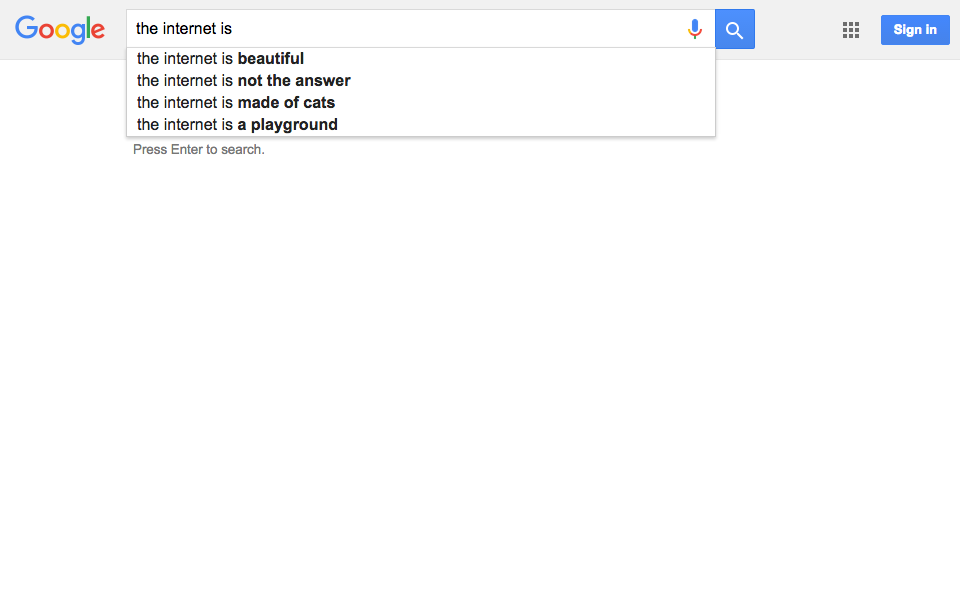

jQuery Basics
Using jQuery on top of HTML and CSS
A web page is made of three main languages

HTML is the markup language

CSS is the design language

JavaScript is the programming language

Getting Elements in jQuery
We find elements using the same selectors as in CSS:
- Get one by id
$('#logo') - Get many by class
$('.photo') - Get all by tag
$('img');
Only difference is we do it in brackets, with a dollar sign.
Changing Elements
Add or remove a class to change how it looks:
var header = $('#pageHeader');
header.addClass('fancyBorder');
header.removeClass('plainBorder');
Change its size and position:
var allPhotos = $('.photo');
allPhotos.width(100);
allPhotos.left(300);
Fade in or fade out:
var allImages = $('img');
allImages.fadeIn();
allImages.fadeOut();
jQuery Basics with Unicorns
Make January Golden
In your JavaScript panel, add the class “gold” to January:
var january = $('#january');
january.addClass('gold');
Challenge:
- February should be orange
- March should be pink
- April should be blue
- The others can be any colour
Make the August Unicorn Smaller
In your JavaScript panel:
var august = $('#august .unicorn');
august.height('40%');
Challenge:
- May should be the same height as August
- March should be 70% of the height of her box
Flying Pegasus Ponies
Create a function containing the code you want to run:
function fly() {
var unicorn = $(this);
unicorn.animate({'margin-bottom':'+=15'}, 1000);
unicorn.animate({'margin-bottom':'-=15'}, 1000, fly);
}
Tell the selected objects when to run the function:
var pegasusPonies = $('.pegasus');
pegasusPonies.click(fly);
Pegasus ponies should now fly when clicked.
June’s Disappearing Trick
Create the turnInvisible function:
function turnInvisible() {
var clickedUnicorn = $(this);
clickedUnicorn.fadeOut();
}
Run the function when June is clicked:
var june = $('#june .unicorn');
june.click( turnInvisible );
June should now disappear when clicked.
Jumping Jacks
Here’s a function to make a unicorn jump:
function jump() {
var unicorn = $(this);
unicorn.animate({'margin-bottom': '+=20'}, 300);
unicorn.animate({'margin-bottom': '-=20'}, 300);
}
Challenge:
Make one of the unicorns jump when the mouseover event happens.

jQuery Basics: Complete!
Great, now it’s time to build our own…
Loading...